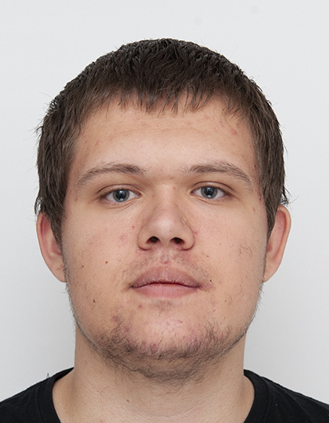

Personlige Information:
- Navn: David Kirk Bilsted Majholt
- Fødselsdag: 4 september 2007
- Status: Statsborger
Sprog:
- Dansk
- Engelsk
- Tysk Nybegynder
Uddannelser:
- Roskilde Tekniske Skole fra januar 2025 til nu
- FGU Nordvestsjælland fra august 2023 til januar 2025
- Tølløse Skole fra august 2015 til juni 2023
- Undløse Skole fra august 2013 til juni 2015
Erhvervserfaring / Frivilligt arbejde:
- Holbæk Kelzor Opbevaring af produkter
- Holbæk Kelzor Oprydning og GLS-håndtering
- Holbæk Kelzor Produkt System håndtering
- Holbæk Mr Mu Opvask/Oprydning
Mine Fritidsinteresser:
- Spil Programmering og design af forskellige genre.
- Hjemmeside Programmering med eventuelt funktioner.
- Læsning af både online Manga og bøger.
Mine kompetencer:
Opsummering af kompetencer.
Loyal, Stabil, Præcis, nøjagtig, Tålmodig, Fleksibel, Tolerant, Målrettet, Initiativrig, Effektiv, Selvstændig, Tillidsvækkende, Troværdig, Pålidelig og Ansvarsbevidst.
-
Loyal, Stabil, Præcis og nøjagtig
Jeg er rigtig meget loyal, alt det jeg laver på som der har en tidsbegrænsning, laver jeg arbejdet inden for den aftalte tid. Samt har jeg aldrig brudt en aftale som jeg har arbejdet på, og kan nemt samarbejde med mine venner eller medarbejdere. Det jeg producere igennem alt mit arbejde, gør jeg mit bedste til at få det til at være nøjagtigt.
-
Tålmodig, Fleksibel og Tolerant
Jeg er rigtig god til at vente på nogle der er langsommere i min gruppe, eller at vente på en forsinkelse af materialer til min opgave eller arbejde. Det gæller ikke kun på arbejdet men også i min fritid, jeg kan nemt vente på en anden person i længere perioder. Samt kan jeg tage næsten alt form for kritik eller negative ting, som kunne resultere i vædres udbrud. Jeg samt også meget fleksibel til mange ting, når jeg har arbejdet med en kunde eller medarbejder kan jeg nemt ændre det meste, hvis det ikke passer ind eller jeg har lavet noget som ikke er helt i tankerne hos min gruppe eller kunder.
-
Målrettet, Initiativrig, Effektiv og Selvstændig
Jeg er en målrettet og initiativrig person, der altid stræber efter at opnå de bedste resultater. Min effektivitet sikrer, at opgaver bliver løst hurtigt og præcist, mens min selvstændighed gør mig i stand til at arbejde uden konstant supervision. Jeg tager ansvar for mine projekter og sikrer, at de bliver gennemført til tiden og med høj kvalitet. Jeg er også meget loyal og stabil, og jeg har aldrig brudt en aftale, jeg har arbejdet på. Jeg kan nemt samarbejde med mine kolleger og sikrer, at alt, hvad jeg producerer, er præcist og nøjagtigt.
-
Tillidsvækkende, Troværdig, Pålidelig og Ansvarsbevidst
Jeg er en tillidsvækkende og troværdig person, der altid leverer pålidelige resultater. Min ansvarsbevidsthed sikrer, at jeg tager ejerskab af mine opgaver og fuldfører dem med høj kvalitet. Jeg opbygger stærke relationer gennem min pålidelighed og evne til at holde mine løfter. Jeg er kendt for at være en person man kan stole på. Min troværdighed og ansvarsfølelse er med til at hjælpe mit sammenarbejde i gruppe opgaver.
it- kompetencer:
Opsummering af kompetencer Windows System Håndtering, Kode Håndtering/Programmering, Program Håndtering samt fil administration.
Jeg har brugt Windows computere så længe jeg kan huske, det ville cirka sige 10 år eller lidt mere. Samt kan min håndtering af kode kaldes tilbage til de tidspunkter hvor jeg lærte de forskellige kodesprog. Det seneste jeg har lært, er CSS hvor dens opsætning og små noter som hjælper mig ved at kunne se hvor tingene ligger, det kom som noget af det første.
I de sidste 4 år før Roskilde Tekniske Skole, lærte jeg programmer så som Visuel Studio Code, Word, Excel og Teams. Da jeg gik på FGU fik jeg en meget nem og hurtig tilgang til fil administration og sortering af næsten alle de største og mest brugte filtyper.